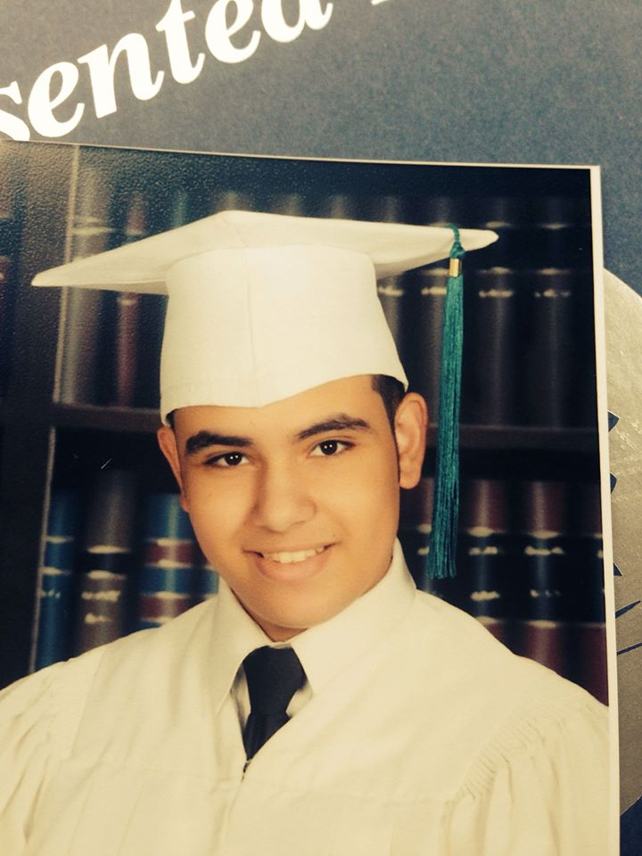

BIOGRAPHY
I was born on September 23rd, 1997. As a young kid, I was always fascinated by film and television. I would make short films with my parents and my friends. I would often write my own short stories and read countless books on filmmaking. Eventually, I attended South Miami Middle School, a magnet school with a broadcasting program. I became the head news reporter for national news and wrote and edited my own packages. After finishing in 2011, I went to New World School of the Arts, where I studied under the theater program. While there, I was able to fine tune my acting skills. I also had the opportunity to direct a short play for the New Playwright's Festival in 2015. After graduating, I studied film production at Miami-Dade College, where I was able to act in and direct several short films. Finally, I attended the University of Miami, where I was able to produce several news packages, as well as participate behind-the-scenes in several UMTV programs. I graduated in 2020, and I currently searching for work elsewhere.
